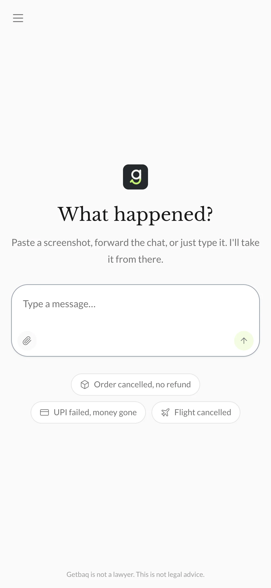
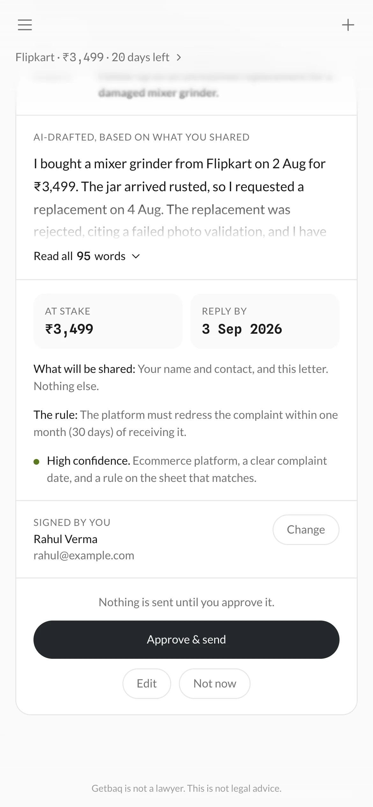
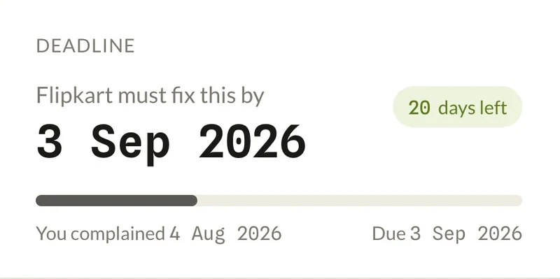
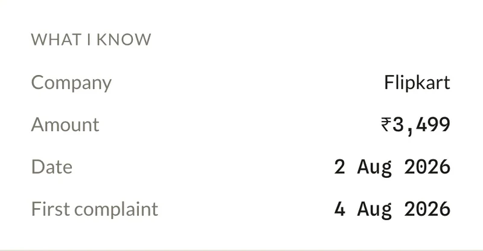
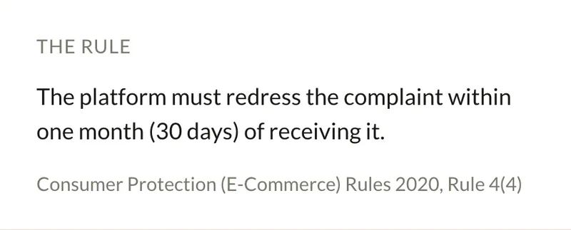
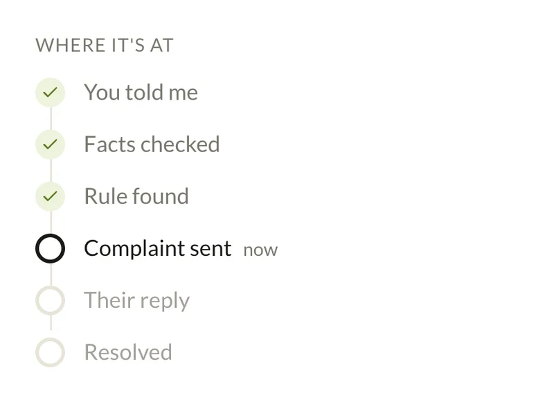
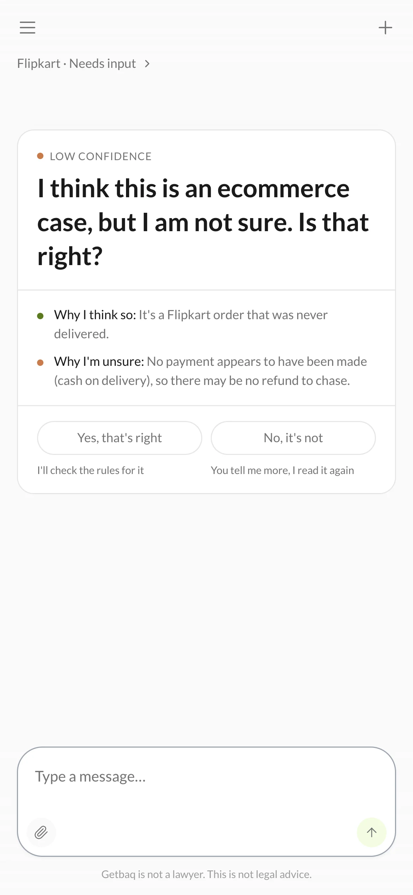
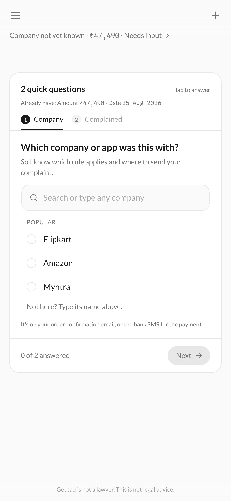
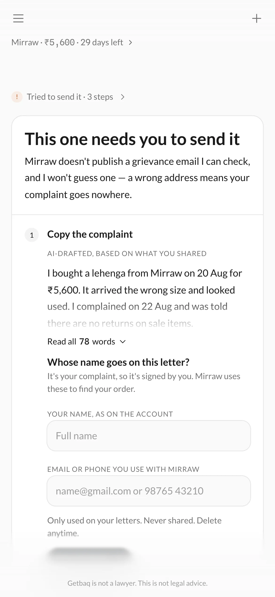
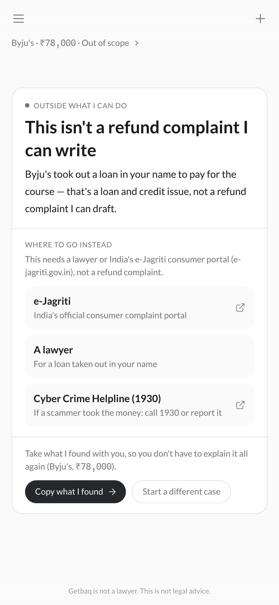

Short read · 8 minDeep dive · 40 min
Getbaq · Self-initiated · 2026
Designing an AI agent that fights for your refund
Overview
The hard part wasn’t making it act. It was deciding what it should never do.
Getbaq turns a messy consumer dispute into a verifiable case. Try the live prototype ↗
Messy input
Screenshots, chats, typed words
Verified case
Facts confirmed, rule sourced, deadline calculated
Approved action
Nothing is sent until the user approves
The problem
A refund isn’t a writing problem. It’s a follow‑through problem.
₹3,499 · Flipkart · Refund pending
The customer has shared screenshots, contacted the merchant several times and been told to wait “5 to 7 working days”. They still don’t know what rule applies, when the refund is due, or what to do next.
1They pay ₹3,499 for a mixer grinder on 2 Aug.
2The jar arrives rusted, so they ask for a replacement.
3It’s rejected: the photo check failed.
4Three calls. “5 to 7 working days,” every time.
5Which rule applies? When is it due? They can’t tell.
6Weeks pass. The money stays with the company.
The complaint is only one step. The harder work is everything around it: what happened, which rule applies, which deadline matters, and what to do when the company goes quiet.
- Evidence
- Rule
- Deadline
- Complaint
- Follow-up
- Escalation
ChatGPT can write the complaint. Getbaq is designed to run the case.
Why an agent
The user shouldn’t have to become the workflow.
- Find the order
- Find the policy
- Understand the rule
- Calculate the deadline
- Write the complaint
- Send it
- Remember to follow up
- Give me what you have
- I understand
- I investigate
- I verify
- I prepare
- You approve
- I monitor
Solution
Getbaq: the agent that runs your refund case…
Tell it what happened, in your own words. It finds the rule, counts the deadline and writes the complaint, and never sends a word without you.





…powered by the case: one record that remembers the rule, the deadline and every reply.
A conversation starts the case. The case carries it.

Deadline
Calculated by code from the verified rule, with days left.

Facts
What the user confirmed: company, amount, dates.

Rule
The one rule that applies, with its source.

Status
Where the case is, and what happens next.
Core flows
Tell it what happened
A screenshot, a forwarded chat or a few typed words. No forms, no categories to pick.
Confirm what it understood
Company, amount and date, played back for a tap. It only asks about what is missing.
See the rule, and the deadline
The deadline first, then the rule in one plain line, cited and verified, and how sure the agent is, with a reason.
Review, then approve
Who it goes to, what will be shared and the letter itself. Nothing is sent until they tap.
Track it, and escalate
A date the company must reply by. If it goes quiet, the 1915 complaint is already written, and it still needs their tap.
Signing the letter
The first time, it asks whose name goes on the letter and the email or phone their account uses, so the company can find the order. Nothing else.
Research
I couldn’t recruit in time, so I changed the method, not the questions.
I answered the same questions from public evidence: Reddit and X complaints, app reviews, consumer forums, news and government data. It is labelled desk research everywhere, and every finding carries a confidence label.
- 66%
- of people with a major service problem got no help from the company. LocalCircles, 2026
- +6.9 pts
- more likely to get relief when a complaint was AI-assisted. Nature Human Behaviour, 2026
Exploring directions
Three ideas I dropped.
Pure chat
Decisions disappear into the conversation.
Conversation, plus action cards, plus a persistent case
The conversation keeps the ambiguity; decisions live on cards and in the case.
Rejected
42 messages earlier
flipkart rejected my replacement
I can help! What was the order date?
2 aug i think
Chosen
Flipkart ₹3,499
Reply by 3 Sep 2026
Send it
Making the user sort the evidence
They’d still be doing the organising.
One box for anything; the agent structures it
Sorting evidence is the agent’s job.
Rejected
Company
Amount
Upload a screenshot
Chosen
What happened?
flipkart rejected my replacement, jar has rust…
Paste, forward or type
An autonomy dial
Trust shouldn’t decide who bears the consequence.
Permission follows the consequence
Anything that can’t be undone always waits for the user.
Rejected
Autonomy
Ask meDo it all
Chosen
Can be undoneJust do it
Can’t be undoneUser’s tap
Prototyping and testing
Three versions of the input, then a real model.
The one-box input took three versions to get right. Then I tested the agent against a real model, Gemini Flash.
Testing against a real model
Five failure modes surfaced. The model made one mistake. The system around it made four.
Failure 01Wrong deadlineRule sheet
- System output
- Every failed payment got 5 days.
- Actual
- RBI gives UPI one working day (T+1).
- Risk
- UPI users would have waited four days they didn’t have.
- Fix
- A separate UPI rule, checked against the RBI circular. The date is computed by code.
Failure 02Merged rulesRule sheet
- System output
- Airline refunds shared one clock.
- Actual
- Card refunds: 7 days. Travel-site bookings: 14 working days.
- Risk
- Cases flagged late a week early.
- Fix
- Separate rules, each with its own source.
Failure 03TimezoneCode
- System output
- Dates were read in the wrong timezone.
- Actual
- The deadline hadn’t passed.
- Risk
- Near midnight, a deadline showed as missed.
- Fix
- One fixed timezone for every date.
Failure 04Invented yearModel
- Model output
- Asked to copy “2 Aug”, the model added 2023 and 2021.
- Actual
- The user never wrote a year.
- Risk
- A wrong year makes a wrong deadline.
- Fix
- A year is kept only if the user wrote one.
Failure 05Wrong recipientRule sheet
- System output
- The UPI letter was addressed to the shop.
- Actual
- The RBI rule applies to the user’s bank.
- Risk
- The complaint goes somewhere that can’t act on it.
- Fix
- It asks for the bank and addresses the letter there.
Key insights
Reliability is a system problem.
Four of the five mistakes came from rules, dates and routing, not from the model.
Confidence is checked, not taken on trust.
The model rates its own, with a reason, and code forces it to low whenever the rule it cites isn’t a verified one.
The one-box input took three versions to get right. That exploration, with the research, ideation and prompts, is in the deep dive.
Design decisions
AI reads. Code counts. You decide.
Each part of the system gets the job it’s good at, and nothing else.
AI
AI reads.
- Understand
- Interpret
- Summarize
- Draft
Code
Code counts.
- Calculate
- Validate
- Enforce
You
You decide.
- Confirm
- Edit
- Approve
- Send
- Escalate
- Interpretation
- Verification
- Action
Don’t ask the model to calculate what can be calculated.
A confidently wrong deadline is worse than no agent. The model shouldn’t calculate dates.
Calculation lives in code. The date is a computed result, backed by a verified rule.
AI
Finds the ruleE-Commerce Rules · 4(4)
“…redress the complaint within one month of receiving it.”
Code
Calculates the deadlinecomputeDeadline(
"2026-08-04",
{ days: 30 }
)
→ "2026-09-03"
What the user sees
Shows where it came fromFlipkart must fix this by
3 Sep 2026
Calculated
Where it landed
Insight 1: Not every action deserves the same autonomy.
As consequence and irreversibility increase, control shifts from the agent to the user.
High consequence
Low consequence
High consequenceCan be undone
Show it. Let them correct it.
The facts it read, the rule it picked, the deadline.
High consequenceCan’t be undone
Your tap. Always.
Sending the complaint. Escalating to 1915.
Low consequenceCan be undone
Do it. Show it.
Reading a message or screenshot. Drafting the letter.
Low consequenceCan’t be undone
Do it. Tell them.
Marking a missed deadline and moving the case to its next step.
Insight 2: The agent can act. It can’t speak for you.
Anything that goes out in the user’s name waits for their approval, however much they come to trust the agent.
The complaint is sent to Flipkart’s grievance officer.
The user’s name and contact, the order reference if known, and the letter. Nothing else.
The grievance channel the rule sheet names for this company.
Undo only appears after Approve & send, for a slipped tap.
Designing for failure
The real product starts when the AI is wrong.
An agent that acts on its own has to know when not to. So I had to ask:
How does an agent act for someone without ever guessing?
Considerations

What if it isn’t sure?
No rule fits well enough to trust. It says so, shows its reasoning, and there is no Approve button.

What if a fact is missing?
It asks only for the missing facts, one short question at a time.

What if there’s no address it can trust?
It won’t guess the recipient. It hands them the letter to send themselves and keeps tracking the deadline.

What if it isn’t a refund complaint?
It points elsewhere, to e-Jagriti, a lawyer or Cyber Crime (1930), rather than forcing a case.
OTPs, PINs and passwords never reach the model.
They’re stripped from the message before the model reads it, whatever the stakes. This is a rule, so it sits outside the matrix.
Explore every state in the live app
Proof
What’s tested, and what isn’t proven yet.
Everything with one right answer is tested deterministically. The model’s judgment needs a scored evaluation, and that hasn’t completed a clean run yet.
Deterministic system
214deterministic tests, all passing
✓lib/deadlines.test.ts (35 tests)✓lib/requiredFacts.test.ts (28 tests)✓lib/state.test.ts (24 tests)✓lib/validate.test.ts (12 tests)✓lib/otp.test.ts (8 tests)✓lib/tone.test.ts (5 tests)…and 14 more filesTest Files 20 passed (20)Tests 214 passed (214)
Model evaluationNot yet completed
30sourced test cases, from real public complaints
Case C03Trap
“Flipkart order from 2019 still shows pending, cash on delivery, never came.”
Expected rule: null. No money was paid, so there’s no refund to chase.
- Built
- Working prototype on a real model. Reads words and screenshots, finds the rule, drafts the letter, checked by code. Rule and evidence UI, approval with undo, six failure states, Google sign-in.
- Simulated or planned
- Sending is simulated. Sending from the user’s own Gmail, and follow-ups while the app is closed, are planned.
- Not yet proven
- Model accuracy, real refunds recovered, real-user trust, willingness to pay.
Looking back
Three things changed how I think about AI products.
- 01Failure is product material.
AI products need designed responses for uncertainty and failure.
- 02Model boundaries are interface decisions.
Deciding what the AI, code and the user each control changes the product itself.
- 03An agent earns its name by completing work.
The goal is moving the case closer to resolution.
Cases, not conversations. Evidence, not prompts. Actions, not answers. Resolution, not response generation.
Getbaq isn’t shipped. The next proof is whether real people trust it with real money.